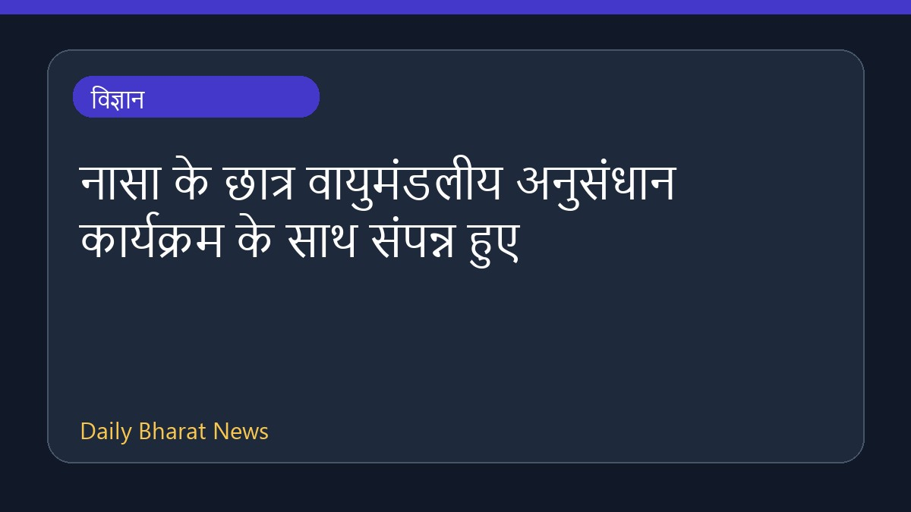

नासा के छात्र वायुमंडलीय अनुसंधान कार्यक्रम के साथ संपन्न हुए

नासा के स्टूडेंट एयरबोर्न रिसर्च प्रोग्राम (SARP) का ग्रीष्मकालीन सत्र 27 जुलाई को संपन्न हुआ। इस कार्यक्रम के तहत छात्रों ने टेक्सास खाड़ी तट के ऊपर मजबूत हवाओं के बीच ओज़ोनसोंड नामक एक बड़े वैज्ञानिक उपकरण और वैज्ञानिक बैलून को वायुमंडल में छोड़ा। छात्रों ने इस वायुमंडलीय क्षेत्र अनुसंधान में सक्रिय रूप से भाग लिया। हालांकि, दी गई जानकारी सीमित है और इस अभियान के अन्य तकनीकी पहलुओं का विवरण इस संक्षिप्त विवरण में उपलब्ध नहीं है।
मूल स्रोत: NASA
Students Take on Airborne Field Research with NASA ↗
Students Take on Airborne Field Research with NASA ↗